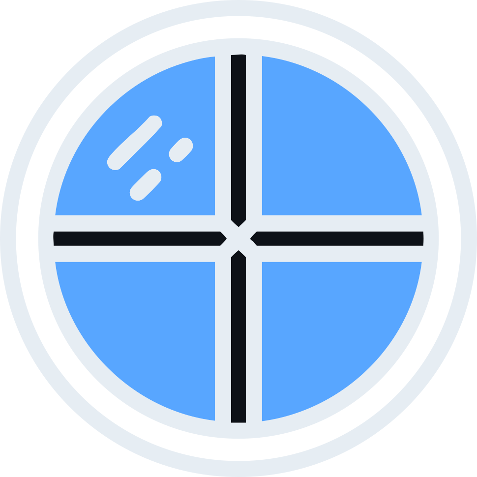

/ʒaˈnɛlɐ/ — Portuguese for window
Desktop and mobile apps in pure TypeScript, compiled to native.
No Rust. No Node. No Electron. Your backend is TypeScript compiled to a real native binary; your frontend runs in the OS webview. macOS, Linux, Windows, iOS and Android — one runtime, and desktop binaries around 190–390 KB.
The only JavaScript engine in the room is the one already inside the system webview — no V8, no Node, no bundled Chromium.
The same main.ts, the same typed contract and the same frontend build
for every platform. Only the shell underneath differs — each one drives the webview the OS
already ships.
| Platform | Webview | Build | Output |
|---|---|---|---|
| macOS | WKWebView | janela build | binary + .app |
| Linux | WebKitGTK | janela build | binary |
| Windows | WebView2 | janela build | .exe (GUI subsystem) |
| iOS | UIKit + WKWebView | janela build --target ios | simulator .app |
| Android | android.webkit.WebView | janela build --target android | .apk |
Commands, the typed contract, events, async commands and file I/O behave the same on all five — the shell owns the clock and the file queue on each. Native file dialogs and runtime window control are desktop-only for now; on mobile they report clearly when called.
Register commands in TypeScript that compiles to native code. Call them from the page with a promise. Push events back. That's the whole API — and it will feel familiar if you've used Tauri.
import type { JanelaApp } from "janela/host";
// one declaration; the page is checked against it
export type AppCommands = {
add: (args: { a: number; b: number }) => number;
};
export type AppEvents = { added: number };
// the app, carrying its contract
export type App = JanelaApp<AppCommands, AppEvents>;
export function setup(app: App) {
app.command("add", (args) => {
// args inferred; return type checked
app.emit("added", args.a + args.b);
return args.a + args.b;
});
}import { createClient } from "janela/api";
// type-only: erased, no host code in the bundle
import type { App } from "../src-host/main";
const client = createClient<App>();
const sum = await client.invoke("add", { a: 2, b: 40 });
// sum: number — checked against the host's contract
const off = client.on("added", (payload) => {
console.log("host says:", payload); // payload: number
});A worked example — commands, events, and a file reader — lives in examples/demo.
Roughly 190–390 KB per desktop app and 195–388 KB packaged for a phone. No bundled browser, no bundled runtime — the window is the webview your OS already ships. Sizes below.
The backend is TypeScript compiled to a native binary by scriptc. No Rust to learn, no Node process to ship.
invoke() and listen() in the page;
app.command() and app.emit() in the host — or declare a contract
and have command names, arguments, results and event payloads checked by the compiler,
with no code generation.
app.readFileAsync does the work off the UI thread and drains under a time
budget, so a 100 MB read holds page round-trips at a 1 ms p99 instead of freezing
the window.
janela build produces the native binary — plus an ad-hoc-signed
.app on macOS, a GUI-subsystem .exe on Windows, and an
.apk or simulator .app for mobile.
Free to use, fork, and ship. Builds on webview/webview (MIT) and scriptc.
Node 24+ and a C++ toolchain for the platform you are building:
Xcode Command Line Tools on macOS, g++ + libwebkit2gtk-4.1-dev on
Linux, an llvm-mingw clang on Windows. iOS additionally needs Xcode and
zig; Android needs a JDK, the Android SDK, the NDK and zig.
$ pnpm create janela # prompts for a name and a template
$ cd my-app # deps are already installed
$ janela dev # Vite dev server + HMR, in a native window
$ janela build # .janela/out/my-app (+ .app on macOS)
$ janela build --target ios # simulator .app
$ janela build --target android # .apkWhat comes out, measured on an Apple Silicon Mac:
| Target | Vanilla | With Vue |
|---|---|---|
| Desktop (macOS arm64) | 224 KB | 289 KB |
| iOS (simulator) | 195 KB | 259 KB |
| Android (APK) | 325 KB | 349 KB |
All figures measured directly at 0.14.1 on scriptc 0.0.36 — the desktop row roughly halved when 0.0.36 added stdlib tree-shaking, and the mobile rows fell 43% and 31% once janela dead-stripped the two library-mode links that tree-shaking does not reach. Every one of the five templates — vanilla, Vue, React, Svelte, Solid — is built and run on all three targets; the full matrix is in docs/frontend.md. A React frontend adds roughly 130 KB over Vue on desktop, far less in an APK.
openFileDialog landed on iOS and Android in
0.13.0. Not there yet: saveFileDialog and window control on mobile (both
deliberate — a phone has no window, and mobile “save” means exporting a file that already
exists), iOS device builds and code signing, icons, installers and notarization, tray icons
and menus, multi-window, and an async HTTP client. Directory picking is unsupported on
Windows and iOS.
The design notes and the compiler findings behind all of it are in
docs/findings.md,
with per-platform notes in
docs/ios.md and
docs/android.md.